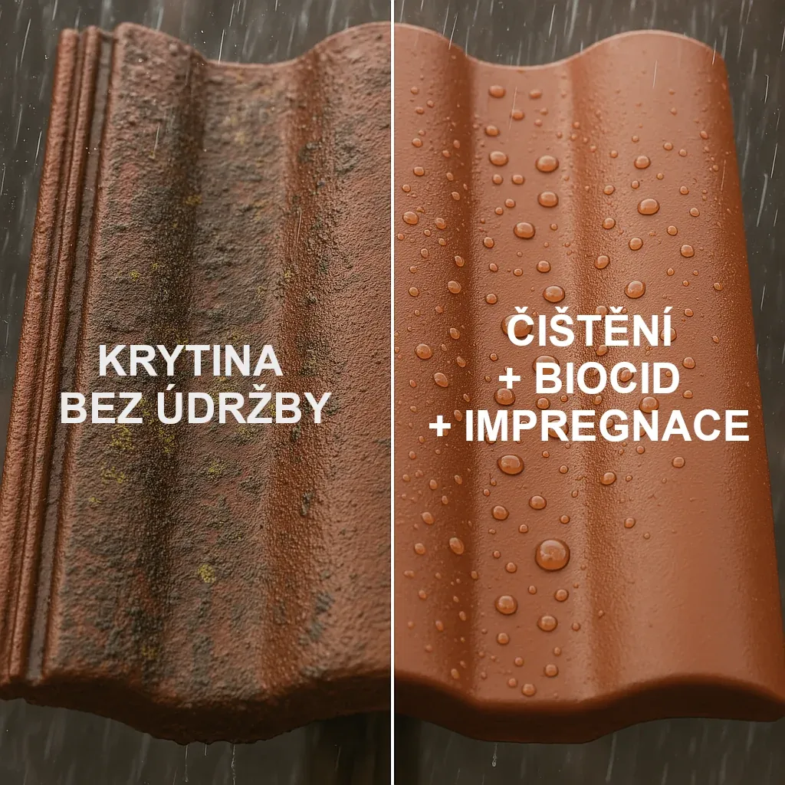
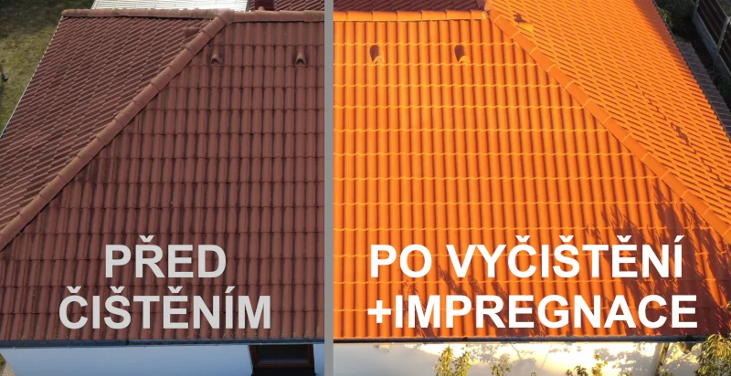
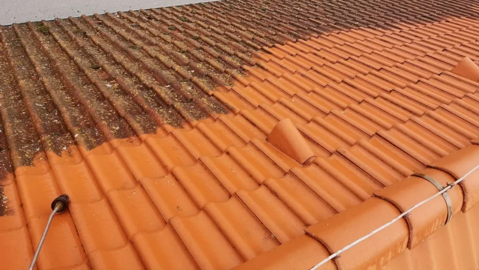
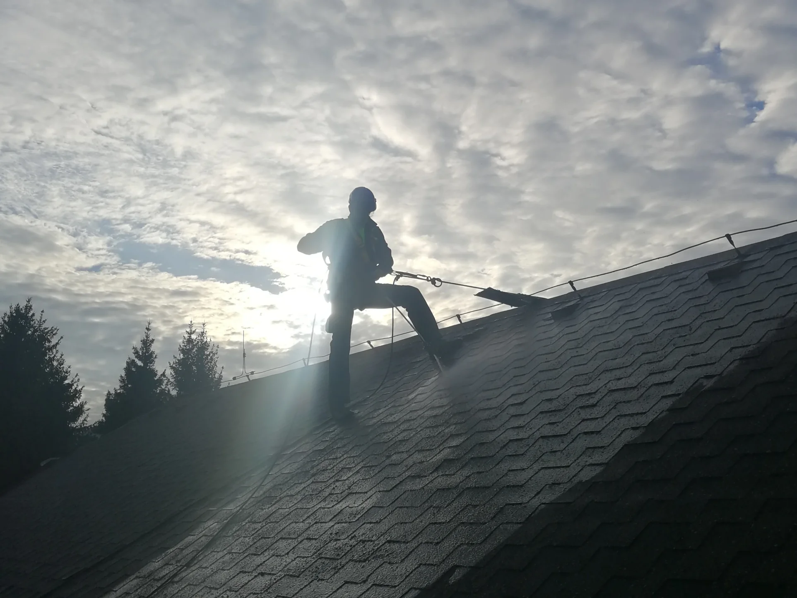
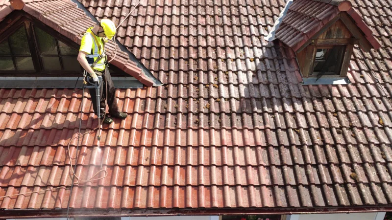

Proč objednat čištění střechy?
- Mech a lišejníky zadržují vlhkost a narušují strukturu střešní krytiny. To vede k rychlejšímu stárnutí materiálu a v krajních případech i k zatékání.
- Pravidelným čištěním a ošetřením střechy lze její životnost prodloužit o mnoho let – a to vše bez nutnosti výměny krytiny.
- Ošetření biocidem zamezuje opětovnému růstu řas, lišejníků, mechu a černé plísně.
- Nano keramická impregnace vytváří ochrannou vodoodpudivou vrstvu, která zabraňuje vsakování vody a usazování špíny. Funguje jako štít a povrch zůstává 6 až 8 let chráněný.

Pravidelná údržba je investice, která se vyplatí – chrání váš majetek a oddaluje nákladné opravy.
Vyplatí se čištění?
Příklad z praxe – čištění střechy o ploše 100 m²:
- Profesionální čištění + biocid + nano keramická impregnace: 14 700 Kč
- Nová střešní krytina včetně práce: od 140 000 Kč a víc
- Úspora až 125 000 Kč – a střecha bude jako nová!
Navíc prodloužíte životnost střechy o mnoho let bez zbytečných investic.
Ceník
- Čištění střechy: od 64 Kč/m²
- Aplikace biocidu na krytinu: od 29 Kč/m²
- Aplikace nano keramické impregnace na krytinu: od 54 Kč/m²
- Čištění FVE panelů: od 49 Kč/m²
- Čištění okapů: od 49 Kč/bm
Ukázka naší práce




